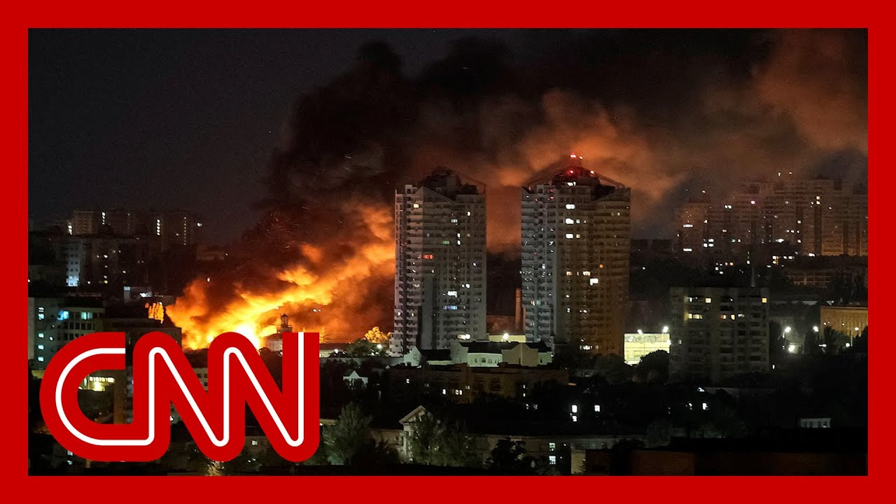

【CNN新闻：俄罗斯对乌克兰发动大规模空袭以报复此前的无人机轰炸】
Summary: Russia and Ukraine are assessing damage after exchanging overnight attacks, with Kyiv reporting casualties and ongoing rescue efforts amid missile and drone strikes.
摘要： 俄罗斯和乌克兰在夜间交火后评估损失，基辅报告称在导弹和无人机袭击中有人伤亡，救援工作仍在进行。

⏱️ Estimated Reading Time: 12 min
📚 高考3500生词 📚 雅思生词 📚 托福生词 📚 GRE生词 📚 UP主推荐生词
Russia and Ukraine are assessing the damage after the two exchanged a barrage of attacks overnight.
俄罗斯和乌克兰在夜间交火后正在评估损失。
The mayor of Kyiv says at least four people were killed and 20 were wounded in Russian strikes on the Ukrainian capital.
基辅市长称，俄罗斯对乌克兰首都的袭击造成至少4人死亡、20人受伤。
Search and rescue operations are ongoing.
搜救行动仍在进行中。
Russia launched ballistic missiles and drones in the early hours of Friday morning.
俄罗斯在周五凌晨发射了弹道导弹和无人机。
Ukrainian officials accused Russia of targeting residential areas in Kyiv and a number of targets across the country.
乌克兰官员指责俄罗斯瞄准基辅居民区和全国多个目标。
Meanwhile, Russian officials say a Ukrainian drone attack hit an industrial site in the southern Russian city of Engels, sending flames and plumes of black smoke into the sky.
与此同时，俄罗斯官员称乌克兰无人机袭击了俄南部城市恩格斯的一处工业设施，引发大火和滚滚黑烟。
Russia's Defense Ministry says it intercepted more than 170 Ukrainian drones from Thursday evening to early Friday morning, and down three Ukrainian guided missiles over the Black Sea.
俄罗斯国防部表示，从周四晚间到周五凌晨拦截了170多架乌克兰无人机，并在黑海上空击落3枚乌克兰制导导弹。
Russian authorities imposed temporary restrictions on three airports in the Moscow region due to Ukrainian drones flying towards the area.
俄罗斯当局因乌克兰无人机飞向该地区而对莫斯科周边三个机场实施临时限制。
CNN's Nick Paton Walsh has more details now on the overnight strikes on Kyiv.
CNN的尼克·帕顿·沃尔什将带来更多关于基辅夜间袭击的细节。
Ultimately until dawn, until Ukraine is able to get a full assessment of exactly what has happened over the skies of Kiev and other key cities.
最终直到黎明，直到乌克兰能够全面评估基辅和其他关键城市上空的确切情况。
During the past hours, we won't know if this was the full retaliation.
过去几小时内，我们尚不清楚这是否是全面报复。
Then Russian President Vladimir Putin seemed to have warned Donald Trump off during that phone call, literally a matter of hours ago.
而俄罗斯总统普京似乎在那通电话中警告了特朗普，就在几小时前。
really?
真的吗？
But we do know of the long range total of 95 propeller driven bombers that were so frequently targeted during the weekend's attacks on Russian air bases there in the air, says Ukraine's air force, attacking Ukraine at the same time to multiple ways, it seems are ballistic missiles, including caliber missiles fired from the south of Russia as well.
但乌克兰空军称，我们知道共有95架远程螺旋桨轰炸机在周末对俄罗斯空军基地的袭击中频繁成为目标，同时俄罗斯似乎通过多种方式攻击乌克兰，包括从俄南部发射的口径导弹等弹道导弹。
So a lot, including drones being thrown at both the capital Kiev, and indeed, missiles fired towards the hockey region in the northeast and Sumy to the north as well.
因此大量无人机和导弹袭击了首都基辅，以及东北部的哈尔科夫地区和北部的苏梅地区。
There have been significant Russian land advances in the past week or so, but minimal damage reports always from Ukraine.
过去一周左右俄罗斯地面部队推进显著，但乌克兰方面的损失报告始终很少。
During assaults like this, they try and limit the information they make public to make the job of Russian targets easier.
在此类袭击期间，他们试图限制公开信息以方便俄军锁定目标。
Indications, though, of power cuts in the capital and indeed injured in the capital as well.
但有迹象表明首都出现了停电和人员受伤。
Many Ukrainians deeply on edge because of that Trump Putin call will be lying awake tonight wondering indeed if this is the big one, if there is in fact worse to come or if there might be multiple nights like this.
许多因特朗普与普京通话而高度紧张的乌克兰人今晚将彻夜难眠，思考这是否是重大转折，是否会有更糟的情况，或是否将连续多晚如此。
But I should stress Ukraine experiences nightly barrages of missiles and attack drones.
但我必须强调，乌克兰每晚都遭受导弹和攻击无人机的轰炸。
And indeed, in just the hours before the weekend's attacks on Russian air bases was launched, there was a record 400 or so drones launched by Russia against Ukraine.
事实上，就在周末对俄罗斯空军基地的袭击发起前几小时，俄罗斯向乌克兰发射了创纪录的约400架无人机。
The vast majority of them indeed intercepted and stopped.
其中绝大多数被拦截击落。
But Moscow increasingly capable, to add to the kind of horrors it's able to inflict on ordinary Ukrainians every single night.
但莫斯科正不断增强能力，加剧其每晚对普通乌克兰人施加的恐怖。
But there are fears, potentially, that what we're seeing in the recent hours may mark something perhaps more significant.
但有人担忧最近几小时的情况可能标志着更严重的事件。
But perhaps at this stage it's too early to tell.
不过现阶段或许还为时过早。
Nick Paton Walsh, CNN, London.
CNN尼克·帕顿·沃尔什于伦敦报道。
For more on this, I want to bring in.
更多相关内容，我将连线。
Malcolm Davis is a senior analyst for defense strategy and capability at the Australian Strategic Policy Institute, and he joins us live from Canberra.
马尔科姆·戴维斯是澳大利亚战略政策研究所防务战略与能力高级分析师，他从堪培拉加入我们。
Thanks for being with us here again.
再次感谢您的参与。
So you and I spoke yesterday about how Russia might respond.
我们昨天讨论了俄罗斯可能的反应。
The first thing you predicted was a dramatic increase in conventional attacks against Ukrainian cities, which seems to be what we saw.
您首先预测俄罗斯会大幅增加对乌克兰城市的常规攻击，这似乎已成现实。
So your sense is this just the beginning? Do you expect more?
所以您认为这只是开始？预计会有更多袭击吗？
I think this is probably the beginning of a of an extended and intensified missile campaign and driving campaign against Ukrainian cities.
我认为这可能是针对乌克兰城市延长和强化的导弹与无人机攻势的开始。
Putin's objective here will be to wear down, the resolve and the fighting spirit of the Ukrainian people and more importantly, wear down the defense capacity of the Ukrainian armed forces, the ability for the Ukrainians to actually defeat these incoming missile and drone threats.
普京的目标是消磨乌克兰人民的决心和斗志，更重要的是削弱乌克兰武装部队的防御能力，即其实际击退导弹和无人机威胁的能力。
And so, I think what you will see is, more of these large attacks on Ukrainian cities, more intense attacks, and potentially, the introduction of new types of delivery systems.
因此我认为未来会看到更多对乌克兰城市的大规模袭击、更猛烈的攻击，并可能引入新型投放系统。
You know, the Russia's, as clearly got some bombers left.
要知道俄罗斯显然还保留了一些轰炸机。
They could bring in the black Jack, bomber, but they could also bring in the, intermediate range ballistic missile.
他们可能出动"黑杰克"轰炸机，也可能使用中程弹道导弹。
So those are the things to watch for.
这些是需要关注的动向。
All right.
好的。
You spoke of Russia, wearing down Ukraine's capabilities here.
您提到俄罗斯正在削弱乌克兰的能力。
What do you make of Ukraine's defenses and its ability to protect itself from this type of barrage? how did they hold up?
您如何看待乌克兰的防御及其应对此类攻击的能力？他们表现如何？
Well, look, I think so far that they're doing quite well.
目前来看他们表现相当不错。
most of the, missiles and drones that are being fired at Ukraine. the Ukrainians are successfully intercepting.
乌克兰成功拦截了大部分来袭导弹和无人机。
But over time, that capacity will decrease.
但这种能力会随时间减弱。
particularly if the, supply of, missiles systems, run from the United States begins to run dry.
特别是如果来自美国的导弹系统供应开始枯竭。
and so I think the real danger comes is if the Trump administration decides it's going to walk away from any ceasefire negotiations and take with it any military assistance or intelligence sharing.
因此真正的危险在于，如果特朗普政府决定退出停火谈判并停止军事援助或情报共享。
At that point, you will start to see Ukrainian air defense capabilities begin to erode very quickly.
那时乌克兰防空能力将开始迅速衰退。
And more, significant damage will be done by these Russian missile and drone attacks.
俄罗斯导弹和无人机袭击将造成更严重的破坏。
Yeah.
是的。
So on that, on the on the US taking away, its support.
关于美国撤回支持。
I mean, Ukraine, as you say, relies on US technology to defend itself, according to CNN's reporting.
如您所说，根据CNN报道，乌克兰依赖美国技术进行自卫。
the Pentagon will be diverting Anti-Drone technology, from Ukraine to U.S. Air Force units in the Middle East.
五角大楼将把反无人机技术从乌克兰调往中东的美空军部队。
And apparently, what we're talking about here is these, proximity fuzes for the rockets that Ukraine uses to shoot down Russian drones.
显然这里指的是乌克兰用于击落俄罗斯无人机的火箭弹近炸引信。
So explain the importance of this. What impact might this have, for Ukraine to lose this type of technology?
请说明其重要性。乌克兰失去这项技术会有什么影响？
It what it does is it makes the Ukrainian air defenses less effective against drone and missile threats.
这将降低乌克兰防空系统应对无人机和导弹威胁的效力。
And so more of these Russian will get through to their targets.
因此更多俄罗斯武器将突破防御命中目标。
and it's really bad timing for the Americans to do this.
美国此时采取该行动时机极差。
I understand why they're doing it, because there's increasing concern that now you'll see, a war emerging in the Middle East, with Iran as a right of Iran as a result of Iran essentially rejecting, the Trump administration's proposed peace plan.
我理解其动机，因为伊朗基本拒绝特朗普政府的和平计划后，中东可能爆发与伊朗的战争。
but, you know, I think it has an effect on Ukraine.
但这会影响乌克兰。
Ukraine is going to be less well placed to be able to successfully intercept incoming missile threats and drone threats, even if they can detect them, because the intercept of missile systems they've got won't be able to detonate at the right location to bring down drone or missile.
乌克兰将更难成功拦截导弹和无人机威胁，即使能探测到，因其拦截导弹系统无法在正确位置引爆以击落目标。
Flipping it, talking about Ukraine's, offensive that that prompted this response from Russia.
反过来看，乌克兰的进攻引发了俄罗斯此次回应。
We saw, you know, about 100 relatively cheap drones taking out dozens of planes, causing billions of dollars in damage.
我们看到约100架相对廉价的无人机摧毁数十架飞机，造成数十亿美元损失。
Beyond the practical implications of this. Do you see it changing anything in terms of the narrative of the war? Could this type of thing have any larger impact beyond the actual sort of physical damage?
除了实际影响，您认为这会改变战争叙事吗？此类事件是否会产生超越实际破坏的更大影响？
Look, this, remarkable attack, by Ukrainian drones on Russia's strategic bombers took 18 months of planning.
这次乌克兰无人机对俄罗斯战略轰炸机的卓越袭击策划了18个月。
and I think that probably the Ukrainians would be very lucky indeed to get another attack in like that.
我认为乌克兰若再次实施类似袭击将非常幸运。
I think that it's highly likely that what you'll see is that this does recede, or retard Russia's ability to deliver, these, glide bombs from long range.
这很可能会削弱或延缓俄罗斯远程投放滑翔炸弹的能力。
The bombers that were destroyed or damaged, in this attack, essentially irreplaceable because they're no longer in production.
此次袭击中损毁的轰炸机基本无法替代，因其已停产。
The T 95 and the two U 22 em backfires.
图-95和两架图-22M"逆火"。
And so therefore, that will be a significant and permanent reduction in Russia's bomber capability, but it won't necessarily have a significant operational impact.
因此这将显著且永久削弱俄罗斯轰炸机能力，但不一定产生重大作战影响。
It has a tactical impact.
它具有战术影响。
It won't necessarily have a long term operational impact in terms of retarding Russia's ability to, generate, firepower and, attacks against Ukraine.
在延缓俄罗斯对乌克兰的火力生成和攻击能力方面，未必具有长期作战影响。
We'll leave it there.
我们就此打住。
Really appreciate your analysis, as always.
一如既往感谢您的分析。
Malcolm Davis in Canberra. Thank you so much.
堪培拉的马尔科姆·戴维斯，非常感谢。